品牌視覺設計
進行 Logo 發想與吉祥物造型設計，延伸品牌的文化符號與角色辨識度。
BRAND IDENTITY CASE STUDY
拉拝手創
以太魯閣族文化、編織工藝與彩虹橋 Gaya 為核心，建立具文化溫度的品牌識別系統。
BRAND STORY
「 拉拝 」之名，源自族名的延續象徵文化、記憶與認同的起點， 我們以太魯閣族「彩虹橋 Gaya」為靈感將信仰轉化為當代生活的設計語言 讓每一件作品不只是商品，更是承載著族群故事與溫度的生命藝術
以太魯閣族文化與彩虹橋 Gaya 為故事起點，呈現品牌的文化根源。
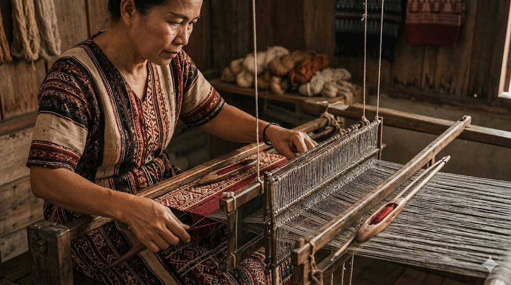
透過編織、梭子與經緯線意象，傳達手作職人精神。
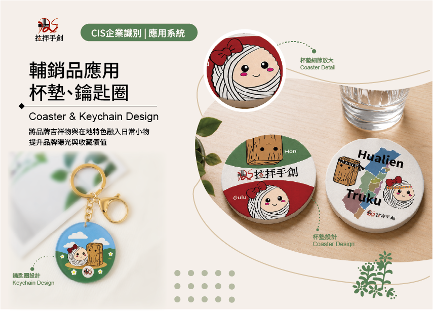
將吉祥物延伸至日常用品，讓品牌進入生活場景。
MY ROLE
從品牌視覺延伸、品牌應用設計到品牌AI影片製作， 協助 Rabay拉拝手創， 建立一致且能落地使用的文化品牌識別。
進行 Logo 發想與吉祥物造型設計，延伸品牌的文化符號與角色辨識度。
名片封面、貼紙、吊牌、杯墊、鑰匙圈、T-shirt 等品牌輔銷品設計。
企劃書封面與部分頁面排版，以及 AI 影片生成、素材整理與後期剪輯。
LOGO SYSTEM
Logo 發想以太魯閣傳統織紋為基礎，結合梭子的輪廓與經緯交織的結構，呈現品牌手作、文化與傳承的精神。
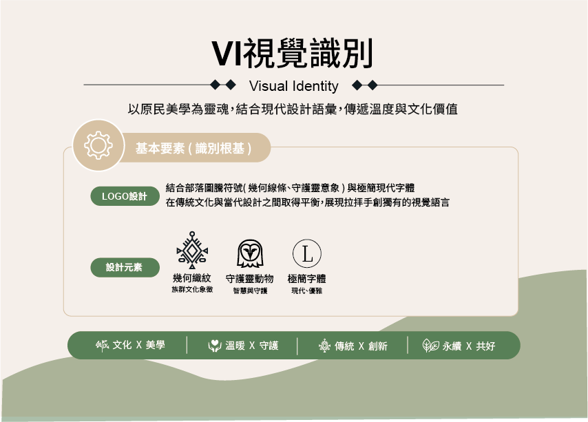
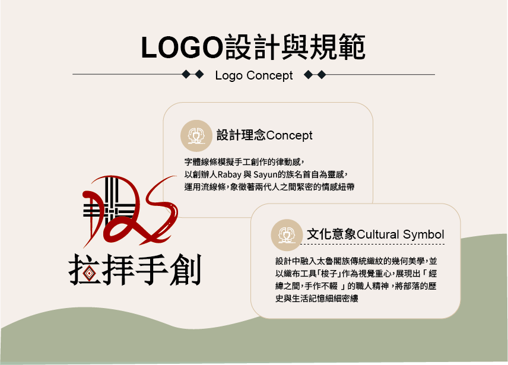
COLOR SYSTEM
創造力、手作熱情
專業、文化根基
山林、自然、永續
柔和、布料、舒適
溫潤、手作、日常
大地、工藝、厚度
BRAND SYMBOL
吉祥物透過擬人化的設計，將品牌文化、手作記憶與親和力轉化成更容易被記住的視覺符號。
角色不只是裝飾元素，也能延伸至貼紙、吊牌、杯墊、鑰匙圈與其他品牌輔銷品。
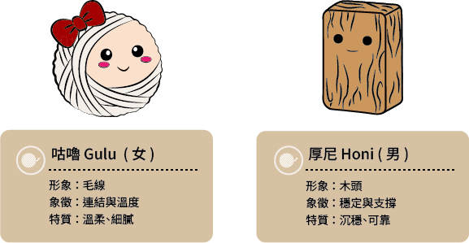
BRAND APPLICATION
透過名片、邀請卡、海報、貼紙、吊牌、杯墊、鑰匙圈、T-shirt 與帆布包，建立完整的品牌應用系統。
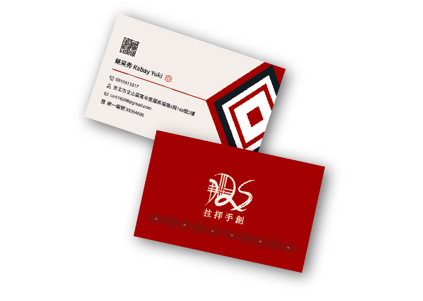
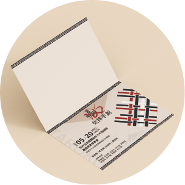
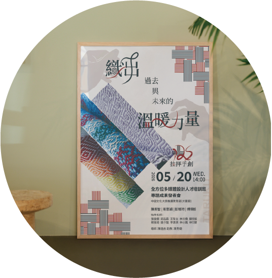
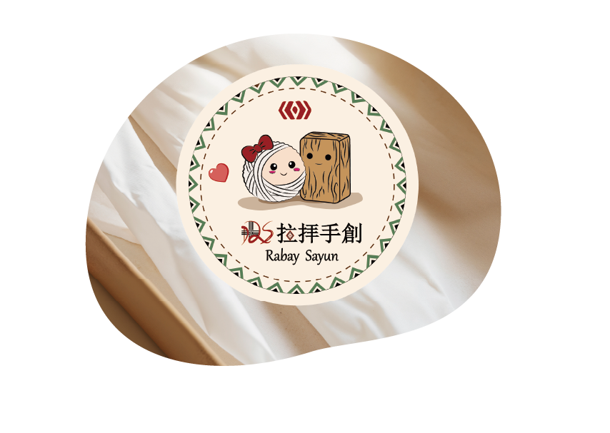
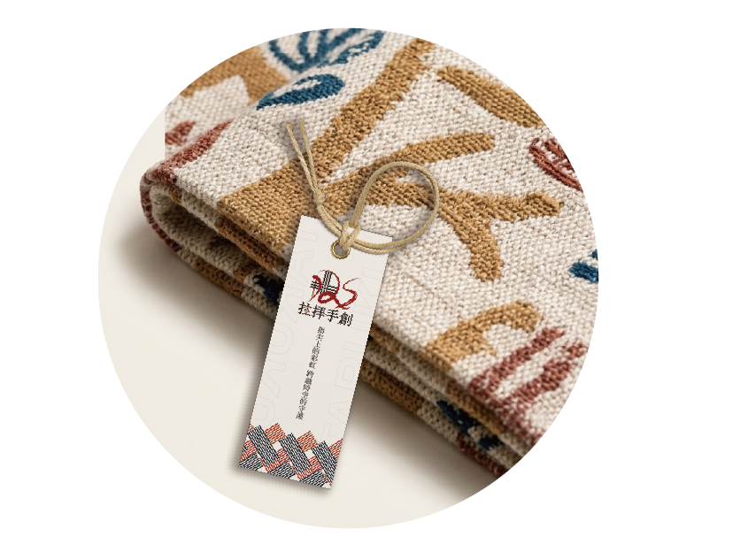
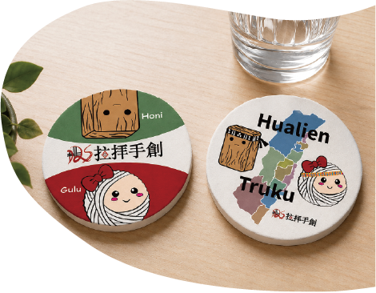
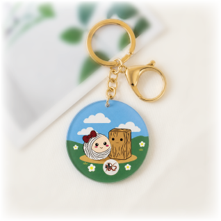
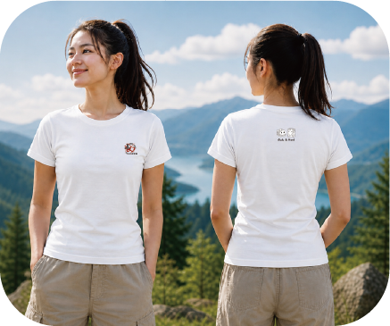
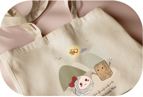
AI VIDEO PRODUCTION
影片製作部分，我使用 Runway 進行 AI 影像生成，並以 Suno 產生音樂氛圍素材，再整理影像與音樂素材，完成後期剪輯與節奏安排。
以 AI 影像生成山林、雲霧與自然場景，建立品牌空氣感。
整理編織與工藝相關素材，強化手作細節與文化感。
透過節奏安排與音樂氛圍，讓影像協助品牌故事傳達。
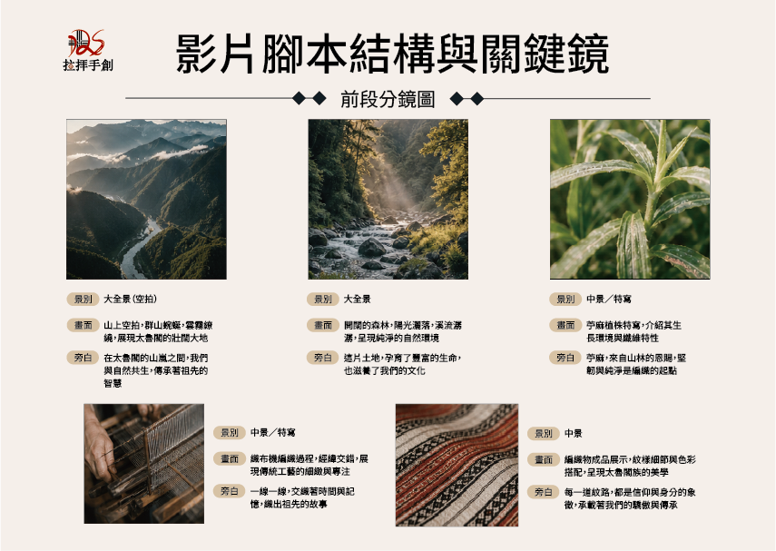
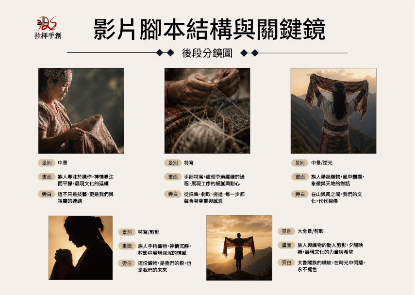
PROJECT SUMMARY
從品牌定位、識別系統、吉祥物、 品牌應用到 AI 影像製作， 建立完整的文化品牌設計專案。